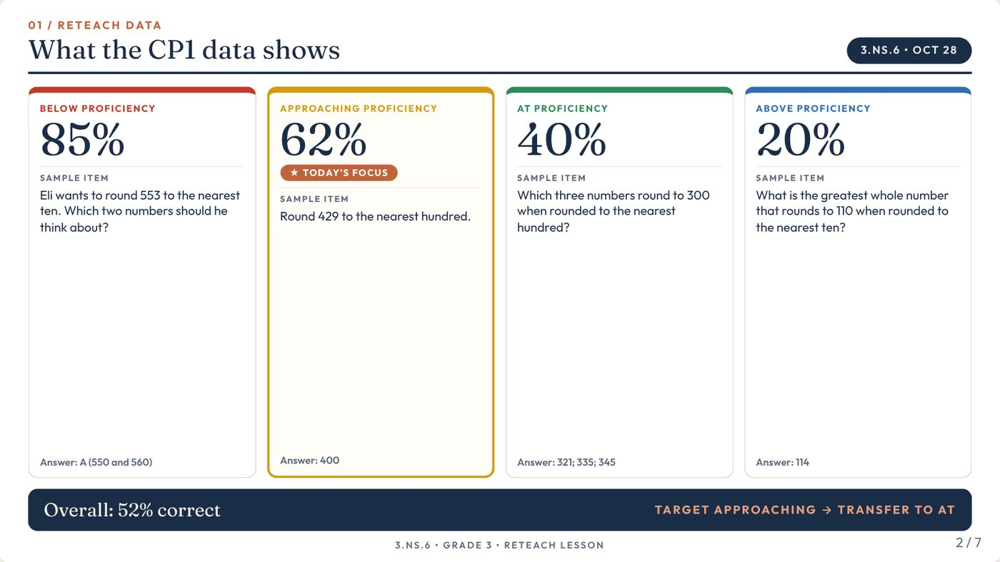
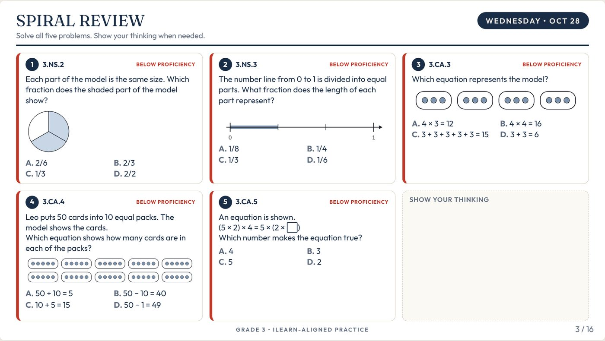
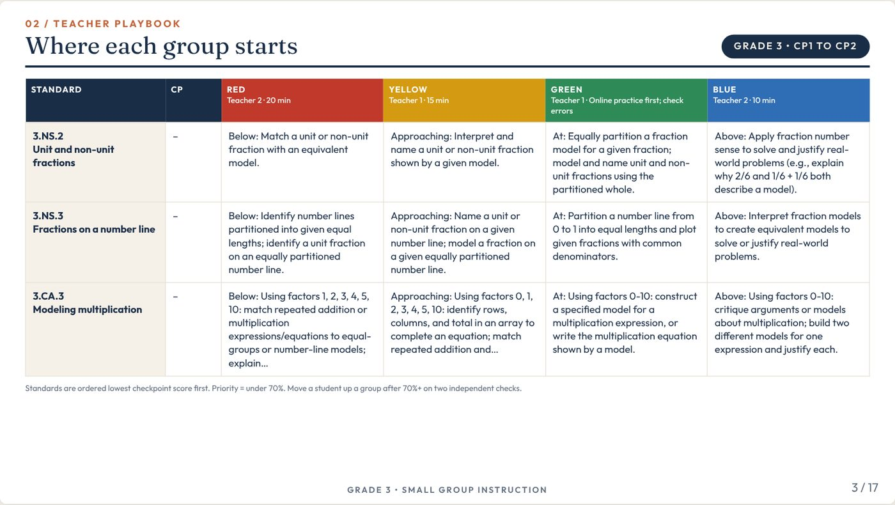
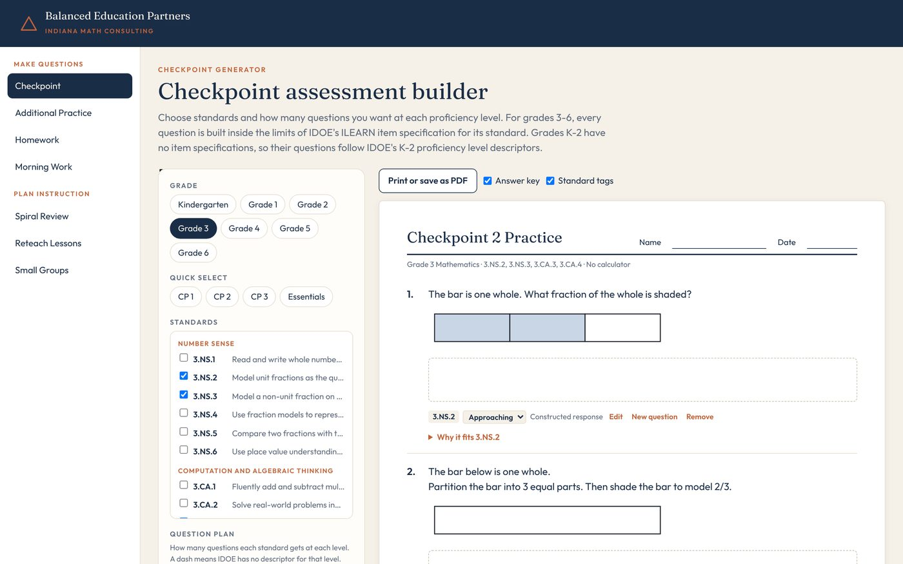
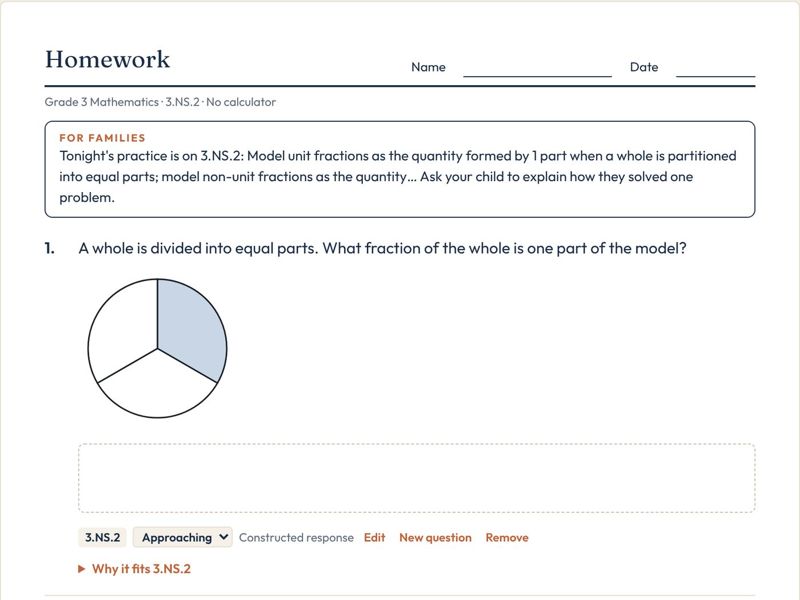
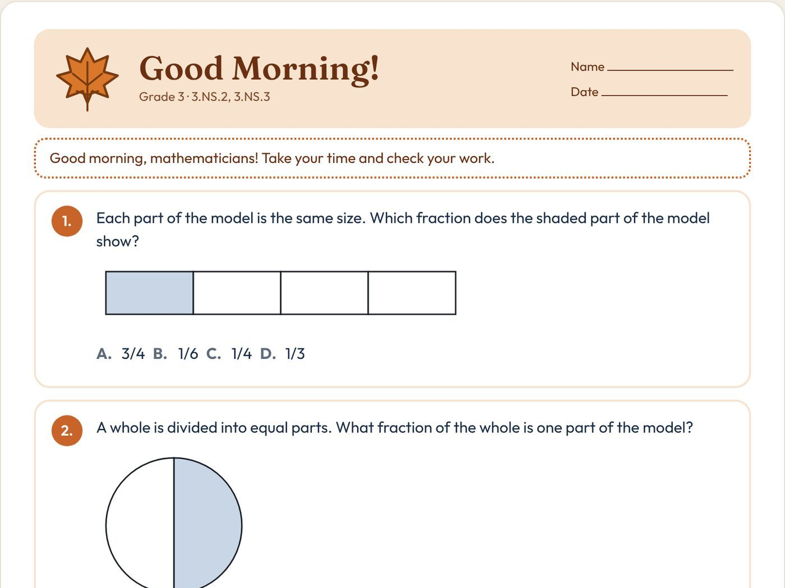

Best for kids. Sustainable for adults.
We work with Indiana schools that want to improve math outcomes and build lasting structure behind their math instruction. Everything we build starts from IDOE's own materials and is made for the teachers who use it every day.

SPEC-CHECKED
Three ways we work with schools
Year-long math support
We build the systems a strong math department runs on and support teams through the year.
- Standards guides
- Pacing and curriculum maps aligned to the checkpoints and ILEARN
- Planning templates and assessments
- Data meetings, and the reteach and review work that comes out of them
ILEARN Intensive
Focused support leading into the testing window.
- Aligned mini-lessons
- A prep timeline
- Test logistics
- On-site and virtual support
Targeted projects
A defined piece of work with a clear finish line.
- Curriculum rollouts
- New teacher onboarding
- Building out a single grade band
Each is scoped and priced per school based on grade levels and depth of support.


We start from IDOE's own materials
The same documents ILEARN is built from are the documents we build from.
We've built tools that generate assessment and practice items directly from the item specifications, with every question tied to a standard and proficiency level. That lets us produce aligned materials for a school much faster than building them by hand, and teachers can see exactly what each question measures.
Built for the work teachers do every week
Our math builder covers grades K–6. Teachers pick the standards and levels, and every question, slide, and line of text can be edited before it prints or gets presented.
Reteach lessons from checkpoint data
Enter a standard's checkpoint results by level. The builder sets the target level and lays out the lesson: reteach data, the goal and the most common mistake, a teacher model, strategy talk, and independent practice.


Spiral review
A daily review plan built from checkpoint results. Weaker standards get more problems, and each starts at the level students are ready for.

Small group instruction
Color groups, a teacher playbook with where each group starts, and a problem set for every group at its level.

Checkpoints and practice
Assessments built to the item specs, with an answer key and a note on why each question fits its standard.

Homework
Five questions on one or two standards, mostly at grade level, with a short note for families.

Morning work
Five friendly warm-ups with a look for the season or the day.
A full system for schools
We're building our tools into a full system, so every school can have what a strong math team has built without needing to build it from scratch.
Start with your checkpoint data
Free 30-minute call
We learn where your school is with math, what's working, and what your team wants to change.
Free checkpoint review
Send us your checkpoint results. We build a reteach plan for your priority standards and walk your team through it.
A scope that fits
If it makes sense to keep going, we scope the support around your grade levels, calendar, and budget.
Before we talk
Who do you work with?
Indiana schools serving grades K–6, mostly charter and smaller schools, that want to improve math outcomes and build lasting structure behind their math instruction.
Do we have to change our curriculum?
We work alongside the curriculum you already use. Our pacing, assessments, and reteach materials are built to fit it.
How is your work aligned to ILEARN?
Everything starts from IDOE's own materials: the standards, item specifications, proficiency level descriptors, and checkpoint blueprints. Every question we build is tied to a standard and a proficiency level.
What does the free checkpoint review include?
You send us your checkpoint results. We identify the priority standards, build a reteach plan, and walk your team through it. If it makes sense to keep going, we talk about what that looks like.
What does it cost?
Each engagement is scoped and priced per school based on grade levels and depth of support. We'll give you a clear number after the first conversation.
What happens to our student data?
School data and student information stay confidential and are used only for our work together. Student names entered in our tools stay on the teacher's own device.
Indiana educators
We've taught in Indiana classrooms, led math departments, and built the systems we now help other schools build.
- Former teacher
- Teach For America, 2020 corps
- Master of Arts in Teaching (MAT)
- Ed.S. in Instructional Design and Technology
- Former teacher
- Current Assistant Principal of Math at an Indianapolis charter school
- 20+ years leading in Indianapolis charter schools
Let's talk about your school
Book a free 30-minute call, or reach out directly. We respond within one business day.